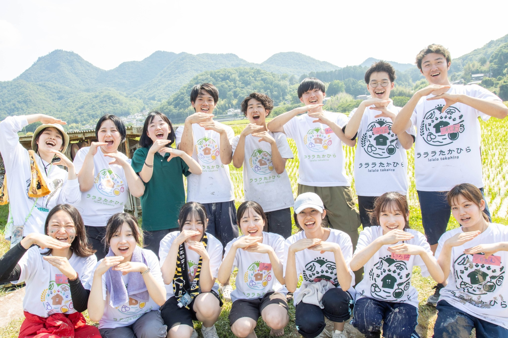
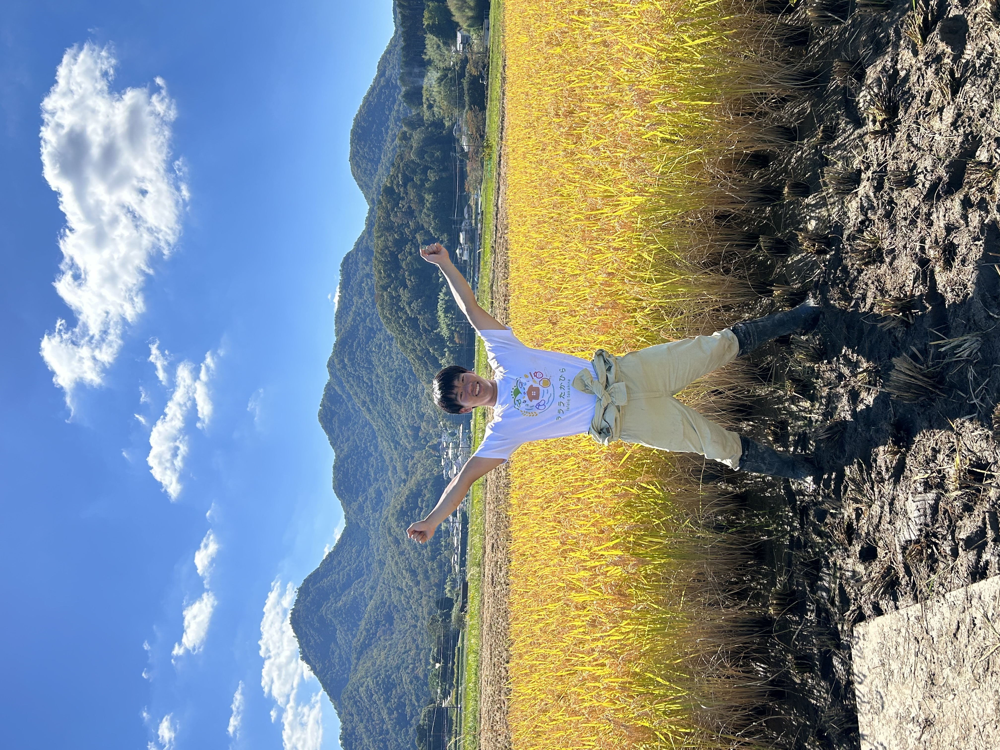

高平の里山で、芋掘り体験、焼き芋、ピザ窯パーティー
詳細、申し込みはこちら日時 10月19日（土）10時～15時
場所 NPO法人里野山家（三田市酒井349
参加費 一般 2,500円 子ども 1,000円（3～12歳）（小学生以下）
定員 40名
申し込み締切 10月11日
駐車場 約15台（無料）
プログラム内容
・芋掘り体験
・焼き芋・薪割り体験
・ピザ窯でピザを作る
・里山散策
・紙すき体験
・宝探しゲーム
服装 動きやすい服装、長袖、長ズボン、帽子、手袋、靴（長靴）
雨天時の対応 小雨決行、荒天中止
集合時間：プログラム開始の10分前（9:50）
親子、家族連れでの参加お待ちしてます。大人の方のみでも大丈夫です。
必須の持ち物・服装の指定：水分、汚れて大丈夫な服装、長靴（あれば）、軍手
私たちの団体について
ラララたかひらは、地域社会に貢献することを目的とした学生ボランティア団体です。私たちは様々なイベントや活動を通じて、地域の皆さんと交流し、支え合っています。
詳細を見る チャットボットに聞いてみる

代表の挨拶
こんにちは関西学院大学工学部の藤越颯人です。ラララたかひらという学生団体で高平地域でイベント開催したり、SNSで魅力発信を行っています。